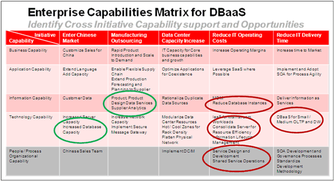

OUM |
Task Overview |
||
Method Navigation |
Current Page Navigation |
||
|
|
||||||||
The purpose of this task is to define one or multiple Transitional Architectures, each that provide value to the enterprise for moving their architecture maturity forward, eventually to a future state that supports the business operations and strategy objectives. The intent is to minimize risk and maximize value returned.
You need to define a strategy that governs how the Transitional Architectures will be deployed. It may be that you decide not to apply the changes for the whole enterprise at one time, but rather implement them to impact one part of the organization at a time. The approach depends on the current situation and where the organization is heading.
You also look into dependencies so that you can take into account necessary accomplishments before moving into another phase (transitional phase, not to be confused with OUM phases).
By defining a roadmap through a series of Transitional Architectures, changes in capabilities, their costs, and effectiveness can be completed and evaluated in definable transitional phases building toward the future state. The intent is to reduce or minimize disruptions to the business operations, delivering the capabilities when the organization needs them to support the strategy, and allow for mid-course corrections that may occur due to changes in the business climate or adjustments to strategy without having to re-work the architecture from the original current state.
INIT.ACT.DSPC Develop Solution and Present to Customer
Transitional Architectures
This work product provide a set of multiple architectural states that are meant to be intermediate architectural states before arriving at a desired future state architecture. Each architecture state provides value to the enterprise and moves the architecture maturity forward. It is typically used as part of developing an architectural roadmap from a current to a future state, via the transitional architecture states.
You should follow these steps:
No. |
Task Step | Component | Component Description |
|---|---|---|---|
1 |
Determine the Transitional Strategy. | Transitional Strategy | The Transitional Strategy component describe the chosen approach when developing the Transitional Architectures, e.g. based on enterprise architecture maturity, using a horizontal approach, or a vertical approach. |
2 |
Develop Capabilities Inventory reflecting the Transitional Strategy. | Capabilities Inventory | The Capabilities Inventory describes the capabilities and their priorities as which ones will be required for each transitional state following the Transitional Strategy. |
3 |
Determine Dependencies and dependency order. | Dependencies | The Dependencies documents the capabilities, technological and operational / organizational dependencies, and the order of these dependencies. |
4 |
Develop Transitional Architectures | Transitional Architectures | The Transitional Architectures contains the actual Transitional Architectures describing the path to arrive at the desired future architecture. |
5 |
Consider technical and non-technical dependencies. | Dependencies (Updated) | The updated Dependencies documents an updated view of capabilities, technological and operational / organizational dependencies, and the order of these dependencies. |
6 |
Consider other business and IT initiatives. | Capabilities Matrix | The Capabilities Matrix compares key capabilities being delivered in a phase (or overall) to other busines and IT initiatives in order to identify those that may be dependent upon or would benefit from the current engagement capabilities. |
7 |
Summarize the Transitional Architectures. | Transitional Architectures Summary | The Transitional Architectures Summary summarizes the enterprise architecture transitional roadmap recommendations, including risks and risk mitigation strategies to support the transitions. |
Before determining the actual Transactional Architectures, you should determine the strategy to move forward to the desired future state. The strategy depends on the organization’s timelines, priorities, maturity and ability to accept risk. One approach is to start with the results from an Enterprise Architecture maturity assessment to determine the maturity level, and then move forward to a desired level by determining the transitional phases (sometimes referred to as states or stages) through which the organization should pass to eventually reach the desired future state.
You typically define phases with different architectural focus. For example, you may have phases where each state has a different focus, such as:
Starting with the capability priorities, considering both the initiatives related to the engagement at hand and other IT initiatives develop an initial inventory of capabilities that are required to establish the foundational components to support the future state.
Make a list of the high-level capabilities that you have identified and analyzed earlier as part of the Maturity Analysis and Recommendations Report (ER.015), the Architectural Gaps and Improvement Options (EA.060), and the Analyzed Capabilities (EA.040) when available.
Group the capabilities into high-level domains relevant for the type of future architecture, and sequence them in the order of defined priorities or in support of prioritized capabilities and initiatives. Split the capabilities into core and supporting capabilities.
Review the identified capabilities against the organizational/operational capabilities and determine which capabilities, technological and operational / organizational, are dependent upon one another. Consider the technology recommendations being applied to the future state. Keep in mind that new technologies may require the augmentation or development of skills that do not yet exist in the organization.
Review and identify the technologies and supporting technology deployment and operational capabilities that require new or additional skills. Define technology that is dependent upon other technologies or supporting architectural components. Define and capture the order of deployment or requisite skills or processes that are required to support the adoption of the capability.
Assess the appropriate placement of the capabilities within the transitional architecture states.
Organize the capabilities in a dependent order, and for non-dependent capabilities validate these against the defined priorities.
Begin the development of the actual Transitional Architectures. Use an iterative process, and, if needed, develop multiple alternative transitional architecture paths.
If developing multiple transitional architecture approaches, various options can be presented to the enterprise stakeholders for review, before selecting the final options. The alternatives can represent various considerations such as accelerated delivery, risk avoidance, and investment options (cost to value). Each alternative would affect the risk, cost, time, and value to different degrees.
Take into consideration impacts and implications of the Operating Model and strategic objectives as the future state architecture is decomposed into a phased model for adoption. Strategic objectives should provide guidance in terms of the time lines required to reach specific objectives and the methods for defining the value expected from the capabilities implemented. The Operating Model must be considered because the capabilities will affect integrated processes and the applications and Information Architecture capabilities they support, and therefore, how and when the capabilities supporting the Operating Model will be available. This can identify risks in the roadmap associated with the scope and breadth of the capabilities required across the organization. For example, shared service capabilities implemented in a single region, might move the organization forward in terms of maturity and capabilities, but may not provide the required capabilities across multiple regions required by certain business processes. Remediation for those regions not serviced would need to be considered as well.
Different views or focus may be applied to the different transitional architecture phases, depending on the objectives for each phase. Some view examples are:
When developing the transactional architecture states there may be situations where timelines and objectives are in conflict with the determined path. For example, if the phases are based on the maturity model, there may be conflicts with the maturity model definition. For all these situations, you should identify these as potential risks.
You can then apply additional capabilities to mitigate the risk. Keep in mind that if you use an appropriate maturity model as a basis, this is still intended for reference, and not to be a strict set of required guidelines. Adjust the phases to support the objectives and priorities, using cost and risk adjustments to balance the time to delivery and the gaps in maturity.
As the Transitional Architectures are developed and refined, both technical and non-technical dependencies need to be reconsidered in the context of the capabilities to be realized within and across the phases.
Technical capabilities are often more obvious and evident than the non-technical ones. Non-technical capabilities are often an afterthought, but are just as or sometimes even more important than the technical capabilities. Think about operational and organizational capabilities supported by the people and processes that will deliver and operate the defined technical capabilities
Update the dependencies you started with earlier with new findings.
Further refine the Transitional Architectures and take into consideration other business and IT initiatives that are not directly related to the engagement at hand. These may already be in-flight. Identify the initiatives that may be dependent upon or would benefit from the current engagement capabilities.
Review the business objectives and other architecture initiatives to ensure that the capabilities delivered within the various Transitional Architectures are being considered in terms of either dependencies or that would be enhanced or could take advantage of the capabilities within a given transitional stage.
This could present opportunities to increase the value proposition of the capabilities where they can support other projects and programs. This may lead to funding opportunities in the development of the infrastructure or other type of implementation that will be required as result of the Transitional Architectures.
It is recommended that you create a matrix where one axis displays the key capabilities for a given phase (or overall), and at the other axis displays the initiatives where you have identified some relationships to one or more capabilities. In the junction cells, you describe per capability what should be accomplished per initiative (if anything), and then you can highlight all the junction cells where there are relationships to or dependencies to the engagement at hand. Below, is an example for a cloud initiative:

Last, combine the various views into a summary describing the Enterprise Architecture transitional roadmap recommendations. Clearly define the risks and risk mitigation strategies to support the transitions. As the scope requires, develop the business case for each state incorporating the value to be received based upon the investment required. Describe the value within the time horizon the organization’s decision makers use to evaluate investment performance.
In support of this, it is recommended that you look into funding the Transitional Architectures by looking at the enterprise Funding Model (GV.090) and performing a Benefit Analysis (ER.110).
This task involves the following method roles:
Role |
Responsibility |
% |
|---|---|---|
Enterprise Architect |
Work with the enterprise to iteratively develop the Transitional Architectures. | 100% |
Customer Enterprise Architect |
Work with the enterprise architect to develop the Transitional Architectures. | * |
Customer Executive(s) |
Communicate and ensure alignment and acceptance with the enterprise. | * |
* Participation level not estimated.
You need the following for this task:
Prerequisite |
Usage |
|---|---|
Business Strategy (BA.010) |
Use the Business Strategy to understand the business objectives. |
Validated Operating Model (BA.025) |
Use the Validated Operating Model to determine implications. |
Maturity Analysis and Recommendations Report (ER.015) |
Use the Maturity Analysis and Recommendations Report (from an enterprise maturity assessment) to identify required capabilities for the Transitional Architecture states, and potentially to determine the strategy for the transitional states. |
Current Enterprise Architecture (EA.030) |
Use the Current Enterprise Architecture to determine the architectural path from the current to the future state. |
Analyzed Capabilities (EA.040) |
Use the Analyzed Capabilities as an input to the Capabilities Inventory. |
Current Architectural Challenges (EA.050) |
Use the Current Architectural Challenges to identify the most critical challenges related to the current architecture. |
Architectural Gaps and Improvement Options (EA.060) |
Use this work product to identify capabilities relevant for the Transitional Architecture states. |
Future State Architecture (EA.110) |
Use the Future State Architecture to determine the architectural path from current to future state. |
There are currently no templates available to assist with this task.
The Transitional Architectures is used in the following ways:
Distribute the Transitional Architectures as follows:
Use the following criteria to check the quality of this work product:

Copyright © 2006, 2016, Oracle and/or its affiliates. All rights reserved.